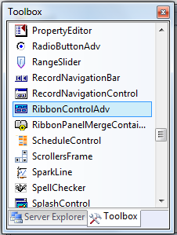
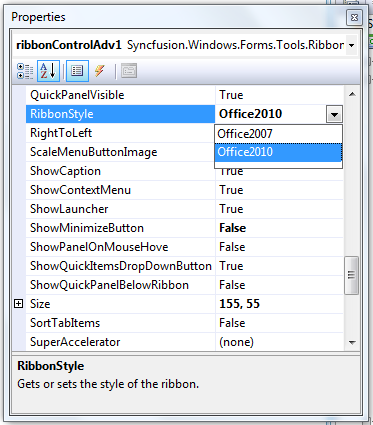
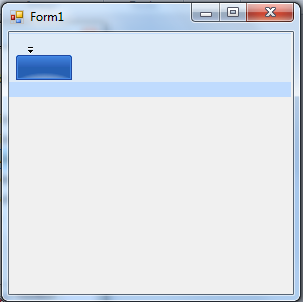
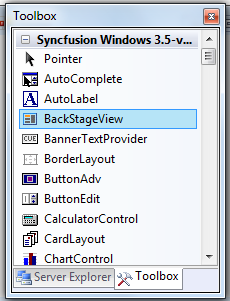
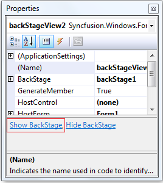
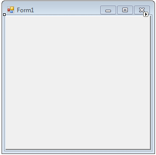
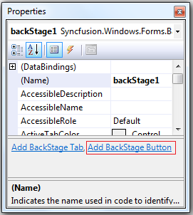
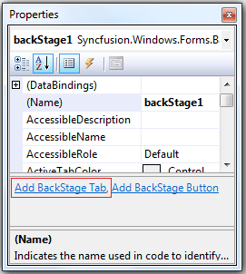
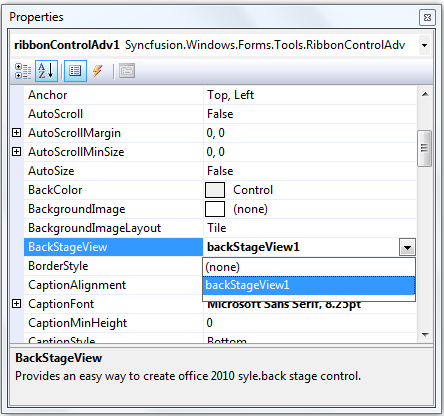
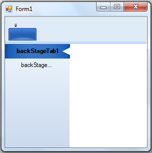

Apply Theme for Ribbon
The following are steps to apply Office 2010 style for the Ribbon:
1. Create a Windows Form application in Visual Studio.
2. Drag and drop the RibbonControlAdv from the Toolbox.

Figure 1459: Toolbox
3. In the Property grid, set RibbonStyle to Office2010.

Figure 1460: RibbonStyle in Property Grid
4. Office 2010 Ribbon will be applied for Ribbon.

Figure 1461: Ribbon with Office 2010 Styles
Creating BackStageView
The following are steps to create a BackStageView:
1) Drag and drop the BackStageView from the Toolbox.

Figure 1462: Toolbox
2) In the Property grid, click the ShowBackstage.

Figure 1463: ShowBackStage in Property Grid
3) Empty BackStage will be displayed.

Figure 1464: Empty BackStage
4) To add a BackStageButton, click the Add BackStage Button.

Figure 1465: Add BackStage Button in Property Grig
5) To add BackStageTab, click the Add BackStage Tab.

Figure 1466: Add BackStage Tab in Property Grid
6) Set BackStageView to RibbonControlAdv.

Figure 7: Add BackStageView to RibbonControlAdv
7) Back Stage will be created with a BackStage Button and a BackStage Tab

Figure 1467: BackStage with a BackStage Button and BackStage Tab